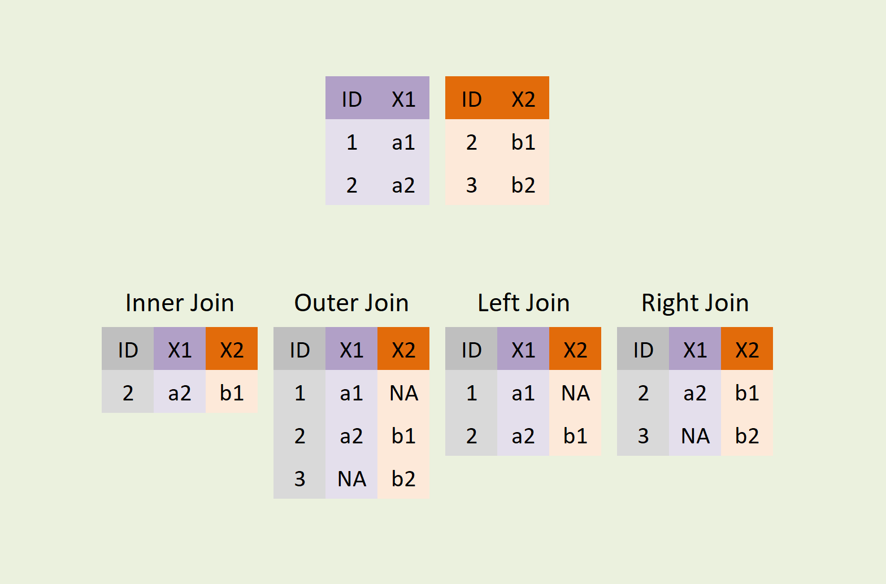

pandas#
pandas はデータ分析によく用いられるパッケージであり、表形式のデータの操作や解析などを行うための機能を提供します。
import pandas as pd
pandasのデータ構造#
pandasにはSeriesとDataFrameの２つの種類のオブジェクト型があります。
Series#
Seriesは一次元の配列ようなオブジェクトです。Seriesには値とそれに関連付けられたインデックスというデータラベルの配列が含まれます。
イメージとしては、エクセルシートの1列分に相当します。
obj=pd.Series([1,2,3,4,5])
obj
0 1
1 2
2 3
3 4
4 5
dtype: int64
obj.values
array([1, 2, 3, 4, 5])
obj.index
RangeIndex(start=0, stop=5, step=1)
Seriesから一つの値や複数の値を参照する時にインデックスのラベルを使って指定することができます。
obj[0]
1
obj[[0,3]]
0 1
3 4
dtype: int64
条件指定によるフィルタリング、スカラー値の掛け算、数学的な関数の適用などNumPyの関数と似ているような操作が可能です。
そこで、インデックスと値の関連が常に保持されます。
obj[obj>3]
3 4
4 5
dtype: int64
obj*2
0 2
1 4
2 6
3 8
4 10
dtype: int64
辞書形式のデータからSeriesを作成することも可能です。
population_dict = {
'東京': 13929286,
'横浜': 3723392,
'大阪': 2691004,
'名古屋': 2390411,
'札幌': 1952356,
'神戸': 1538316,
'京都': 1474570,
'福岡': 1532591,
'広島': 1196564,
'仙台': 1098330
}
# 辞書からSeriesを作成
population_series = pd.Series(population_dict)
population_series
東京 13929286
横浜 3723392
大阪 2691004
名古屋 2390411
札幌 1952356
神戸 1538316
京都 1474570
福岡 1532591
広島 1196564
仙台 1098330
dtype: int64
population_series[["東京","仙台"]]
東京 13929286
仙台 1098330
dtype: int64
population_series["東京":"京都"]
東京 13929286
横浜 3723392
大阪 2691004
名古屋 2390411
札幌 1952356
神戸 1538316
京都 1474570
dtype: int64
DataFrame#
データフレームはテーブル形式のデータ構造になって、行と列の両方のインデックスを持っています。
複数のSeriesオブジェクトを結合して作成されます。エクセルシート全体のようなイメージで理解できます。

データフレームを作成する方法はたくさんありますが、最も一般的な方法は、同じ長さを持つリスト型のバリューを持った辞書から作成します。
data_dict = {
'City': ['東京', '横浜', '大阪', '名古屋', '札幌', '神戸', '京都', '福岡', '広島', '仙台'],
'Population': [13929286, 3723392, 2691004, 2390411, 1952356, 1538316, 1474570, 1532591, 1196564, 1098330],
'Income': [754, 602, 615, 530, 535, 535, 490, 477, 457, 444]
}
# 辞書からDataFrameを作成
df = pd.DataFrame(data_dict)
作成されたデータフレームは、Seriseと同じように自動的にインデックスが代入されます。
df
| City | Population | Income | |
|---|---|---|---|
| 0 | 東京 | 13929286 | 754 |
| 1 | 横浜 | 3723392 | 602 |
| 2 | 大阪 | 2691004 | 615 |
| 3 | 名古屋 | 2390411 | 530 |
| 4 | 札幌 | 1952356 | 535 |
| 5 | 神戸 | 1538316 | 535 |
| 6 | 京都 | 1474570 | 490 |
| 7 | 福岡 | 1532591 | 477 |
| 8 | 広島 | 1196564 | 457 |
| 9 | 仙台 | 1098330 | 444 |
データの読み書き#
pandasの特徴は、テーブル形式のデータをデータフレームオブジェクトとして読み込む関数がたくさんあることです。
例えば、CSV ファイルを読み込むための```pd.read_csv()``という関数が用意されています。 こちらを使って CSV ファイルを読み込みます。
df=pd.read_csv("https://raw.githubusercontent.com/lvzeyu/css_tohoku/master/css_tohoku/draft/Data/titanic.csv")
df
| pclass | name | sex | age | sibsp | parch | ticket | fare | cabin | embarked | boat | body | home.dest | survived | |
|---|---|---|---|---|---|---|---|---|---|---|---|---|---|---|
| 0 | 1.0 | Allen, Miss. Elisabeth Walton | female | 29.0000 | 0.0 | 0.0 | 24160 | 211.3375 | B5 | S | 2 | NaN | St Louis, MO | 1 |
| 1 | 1.0 | Allison, Master. Hudson Trevor | male | 0.9167 | 1.0 | 2.0 | 113781 | 151.5500 | C22 C26 | S | 11 | NaN | Montreal, PQ / Chesterville, ON | 1 |
| 2 | 1.0 | Allison, Miss. Helen Loraine | female | 2.0000 | 1.0 | 2.0 | 113781 | 151.5500 | C22 C26 | S | NaN | NaN | Montreal, PQ / Chesterville, ON | 0 |
| 3 | 1.0 | Allison, Mr. Hudson Joshua Creighton | male | 30.0000 | 1.0 | 2.0 | 113781 | 151.5500 | C22 C26 | S | NaN | 135.0 | Montreal, PQ / Chesterville, ON | 0 |
| 4 | 1.0 | Allison, Mrs. Hudson J C (Bessie Waldo Daniels) | female | 25.0000 | 1.0 | 2.0 | 113781 | 151.5500 | C22 C26 | S | NaN | NaN | Montreal, PQ / Chesterville, ON | 0 |
| ... | ... | ... | ... | ... | ... | ... | ... | ... | ... | ... | ... | ... | ... | ... |
| 1304 | 3.0 | Zabour, Miss. Hileni | female | 14.5000 | 1.0 | 0.0 | 2665 | 14.4542 | NaN | C | NaN | 328.0 | NaN | 0 |
| 1305 | 3.0 | Zabour, Miss. Thamine | female | NaN | 1.0 | 0.0 | 2665 | 14.4542 | NaN | C | NaN | NaN | NaN | 0 |
| 1306 | 3.0 | Zakarian, Mr. Mapriededer | male | 26.5000 | 0.0 | 0.0 | 2656 | 7.2250 | NaN | C | NaN | 304.0 | NaN | 0 |
| 1307 | 3.0 | Zakarian, Mr. Ortin | male | 27.0000 | 0.0 | 0.0 | 2670 | 7.2250 | NaN | C | NaN | NaN | NaN | 0 |
| 1308 | 3.0 | Zimmerman, Mr. Leo | male | 29.0000 | 0.0 | 0.0 | 315082 | 7.8750 | NaN | S | NaN | NaN | NaN | 0 |
1309 rows × 14 columns
データフレームをファイルに書き出せます。
#df.to_csv("./Data/titanic.csv")
統計量の算出#
データフレームには、中のデータに対し統計量を計算するためのメソッドも用意されています。
df["age"].mean()
29.8811345124283
df["age"].var()
207.74897359969773
df["age"].sum()
31255.6667
# 頻度
df["age"].value_counts()
age
24.0000 47
22.0000 43
21.0000 41
30.0000 40
18.0000 39
..
0.3333 1
22.5000 1
70.5000 1
0.6667 1
26.5000 1
Name: count, Length: 98, dtype: int64
インデックス参照、選択、フィルタリング#
pandasでは、データフレームの行や列を効率的に操作するために、インデックス参照、選択、フィルタリング機能が提供されています。
df["sex"]
0 female
1 male
2 female
3 male
4 female
...
1304 female
1305 female
1306 male
1307 male
1308 male
Name: sex, Length: 1309, dtype: object
df[["sex","age"]]
| sex | age | |
|---|---|---|
| 0 | female | 29.0000 |
| 1 | male | 0.9167 |
| 2 | female | 2.0000 |
| 3 | male | 30.0000 |
| 4 | female | 25.0000 |
| ... | ... | ... |
| 1304 | female | 14.5000 |
| 1305 | female | NaN |
| 1306 | male | 26.5000 |
| 1307 | male | 27.0000 |
| 1308 | male | 29.0000 |
1309 rows × 2 columns
df[:5]
| pclass | name | sex | age | sibsp | parch | ticket | fare | cabin | embarked | boat | body | home.dest | survived | |
|---|---|---|---|---|---|---|---|---|---|---|---|---|---|---|
| 0 | 1.0 | Allen, Miss. Elisabeth Walton | female | 29.0000 | 0.0 | 0.0 | 24160 | 211.3375 | B5 | S | 2 | NaN | St Louis, MO | 1 |
| 1 | 1.0 | Allison, Master. Hudson Trevor | male | 0.9167 | 1.0 | 2.0 | 113781 | 151.5500 | C22 C26 | S | 11 | NaN | Montreal, PQ / Chesterville, ON | 1 |
| 2 | 1.0 | Allison, Miss. Helen Loraine | female | 2.0000 | 1.0 | 2.0 | 113781 | 151.5500 | C22 C26 | S | NaN | NaN | Montreal, PQ / Chesterville, ON | 0 |
| 3 | 1.0 | Allison, Mr. Hudson Joshua Creighton | male | 30.0000 | 1.0 | 2.0 | 113781 | 151.5500 | C22 C26 | S | NaN | 135.0 | Montreal, PQ / Chesterville, ON | 0 |
| 4 | 1.0 | Allison, Mrs. Hudson J C (Bessie Waldo Daniels) | female | 25.0000 | 1.0 | 2.0 | 113781 | 151.5500 | C22 C26 | S | NaN | NaN | Montreal, PQ / Chesterville, ON | 0 |
df[df["age"]>70]
| pclass | name | sex | age | sibsp | parch | ticket | fare | cabin | embarked | boat | body | home.dest | survived | |
|---|---|---|---|---|---|---|---|---|---|---|---|---|---|---|
| 9 | 1.0 | Artagaveytia, Mr. Ramon | male | 71.0 | 0.0 | 0.0 | PC 17609 | 49.5042 | NaN | C | NaN | 22.0 | Montevideo, Uruguay | 0 |
| 14 | 1.0 | Barkworth, Mr. Algernon Henry Wilson | male | 80.0 | 0.0 | 0.0 | 27042 | 30.0000 | A23 | S | B | NaN | Hessle, Yorks | 1 |
| 61 | 1.0 | Cavendish, Mrs. Tyrell William (Julia Florence... | female | 76.0 | 1.0 | 0.0 | 19877 | 78.8500 | C46 | S | 6 | NaN | Little Onn Hall, Staffs | 1 |
| 135 | 1.0 | Goldschmidt, Mr. George B | male | 71.0 | 0.0 | 0.0 | PC 17754 | 34.6542 | A5 | C | NaN | NaN | New York, NY | 0 |
| 727 | 3.0 | Connors, Mr. Patrick | male | 70.5 | 0.0 | 0.0 | 370369 | 7.7500 | NaN | Q | NaN | 171.0 | NaN | 0 |
| 1235 | 3.0 | Svensson, Mr. Johan | male | 74.0 | 0.0 | 0.0 | 347060 | 7.7750 | NaN | S | NaN | NaN | NaN | 0 |
locとilocを使うことで、データフレームから行や列の一部分を選択することができます。
軸ラベルを使うときは
locラベル（行名や列名）または条件式でインデックスを指定
整数のインデックス位置による参照を使うときは
ilocインデックス番号でインデックスを指定
df.loc[96,['name','age']]
name Douglas, Mr. Walter Donald
age 50.0
Name: 96, dtype: object
df.iloc[96,[1,3]]
name Douglas, Mr. Walter Donald
age 50.0
Name: 96, dtype: object
条件を指定して選択した要素に対し、値の書き換えを行うことができます。
df.loc[df["age"]<1, ['age']] = 1
年齢が30-50歳の男性のデータを取り出し、Name, Age, Sexを示してください。
ソート#
pandasは、データを一定の基準でソートする機能を提供しています。
行や列のインデックスをソートするためには、sort_index()メソッドを使います。
df.sort_index(ascending=False)
| pclass | name | sex | age | sibsp | parch | ticket | fare | cabin | embarked | boat | body | home.dest | survived | |
|---|---|---|---|---|---|---|---|---|---|---|---|---|---|---|
| 1308 | 3.0 | Zimmerman, Mr. Leo | male | 29.0 | 0.0 | 0.0 | 315082 | 7.8750 | NaN | S | NaN | NaN | NaN | 0 |
| 1307 | 3.0 | Zakarian, Mr. Ortin | male | 27.0 | 0.0 | 0.0 | 2670 | 7.2250 | NaN | C | NaN | NaN | NaN | 0 |
| 1306 | 3.0 | Zakarian, Mr. Mapriededer | male | 26.5 | 0.0 | 0.0 | 2656 | 7.2250 | NaN | C | NaN | 304.0 | NaN | 0 |
| 1305 | 3.0 | Zabour, Miss. Thamine | female | NaN | 1.0 | 0.0 | 2665 | 14.4542 | NaN | C | NaN | NaN | NaN | 0 |
| 1304 | 3.0 | Zabour, Miss. Hileni | female | 14.5 | 1.0 | 0.0 | 2665 | 14.4542 | NaN | C | NaN | 328.0 | NaN | 0 |
| ... | ... | ... | ... | ... | ... | ... | ... | ... | ... | ... | ... | ... | ... | ... |
| 4 | 1.0 | Allison, Mrs. Hudson J C (Bessie Waldo Daniels) | female | 25.0 | 1.0 | 2.0 | 113781 | 151.5500 | C22 C26 | S | NaN | NaN | Montreal, PQ / Chesterville, ON | 0 |
| 3 | 1.0 | Allison, Mr. Hudson Joshua Creighton | male | 30.0 | 1.0 | 2.0 | 113781 | 151.5500 | C22 C26 | S | NaN | 135.0 | Montreal, PQ / Chesterville, ON | 0 |
| 2 | 1.0 | Allison, Miss. Helen Loraine | female | 2.0 | 1.0 | 2.0 | 113781 | 151.5500 | C22 C26 | S | NaN | NaN | Montreal, PQ / Chesterville, ON | 0 |
| 1 | 1.0 | Allison, Master. Hudson Trevor | male | 1.0 | 1.0 | 2.0 | 113781 | 151.5500 | C22 C26 | S | 11 | NaN | Montreal, PQ / Chesterville, ON | 1 |
| 0 | 1.0 | Allen, Miss. Elisabeth Walton | female | 29.0 | 0.0 | 0.0 | 24160 | 211.3375 | B5 | S | 2 | NaN | St Louis, MO | 1 |
1309 rows × 14 columns
df.sort_index(axis=1)
| age | boat | body | cabin | embarked | fare | home.dest | name | parch | pclass | sex | sibsp | survived | ticket | |
|---|---|---|---|---|---|---|---|---|---|---|---|---|---|---|
| 0 | 29.0 | 2 | NaN | B5 | S | 211.3375 | St Louis, MO | Allen, Miss. Elisabeth Walton | 0.0 | 1.0 | female | 0.0 | 1 | 24160 |
| 1 | 1.0 | 11 | NaN | C22 C26 | S | 151.5500 | Montreal, PQ / Chesterville, ON | Allison, Master. Hudson Trevor | 2.0 | 1.0 | male | 1.0 | 1 | 113781 |
| 2 | 2.0 | NaN | NaN | C22 C26 | S | 151.5500 | Montreal, PQ / Chesterville, ON | Allison, Miss. Helen Loraine | 2.0 | 1.0 | female | 1.0 | 0 | 113781 |
| 3 | 30.0 | NaN | 135.0 | C22 C26 | S | 151.5500 | Montreal, PQ / Chesterville, ON | Allison, Mr. Hudson Joshua Creighton | 2.0 | 1.0 | male | 1.0 | 0 | 113781 |
| 4 | 25.0 | NaN | NaN | C22 C26 | S | 151.5500 | Montreal, PQ / Chesterville, ON | Allison, Mrs. Hudson J C (Bessie Waldo Daniels) | 2.0 | 1.0 | female | 1.0 | 0 | 113781 |
| ... | ... | ... | ... | ... | ... | ... | ... | ... | ... | ... | ... | ... | ... | ... |
| 1304 | 14.5 | NaN | 328.0 | NaN | C | 14.4542 | NaN | Zabour, Miss. Hileni | 0.0 | 3.0 | female | 1.0 | 0 | 2665 |
| 1305 | NaN | NaN | NaN | NaN | C | 14.4542 | NaN | Zabour, Miss. Thamine | 0.0 | 3.0 | female | 1.0 | 0 | 2665 |
| 1306 | 26.5 | NaN | 304.0 | NaN | C | 7.2250 | NaN | Zakarian, Mr. Mapriededer | 0.0 | 3.0 | male | 0.0 | 0 | 2656 |
| 1307 | 27.0 | NaN | NaN | NaN | C | 7.2250 | NaN | Zakarian, Mr. Ortin | 0.0 | 3.0 | male | 0.0 | 0 | 2670 |
| 1308 | 29.0 | NaN | NaN | NaN | S | 7.8750 | NaN | Zimmerman, Mr. Leo | 0.0 | 3.0 | male | 0.0 | 0 | 315082 |
1309 rows × 14 columns
値によってソートするためには、sort_values()メソッドを使います。
デフォルトでは、欠損値が末尾にソートされます。
df.sort_values(by="age")
| pclass | name | sex | age | sibsp | parch | ticket | fare | cabin | embarked | boat | body | home.dest | survived | |
|---|---|---|---|---|---|---|---|---|---|---|---|---|---|---|
| 427 | 2.0 | Hamalainen, Master. Viljo | male | 1.0 | 1.0 | 1.0 | 250649 | 14.5000 | NaN | S | 4 | NaN | Detroit, MI | 1 |
| 895 | 3.0 | Johnson, Miss. Eleanor Ileen | female | 1.0 | 1.0 | 1.0 | 347742 | 11.1333 | NaN | S | 15 | NaN | NaN | 1 |
| 826 | 3.0 | Goodwin, Master. Sidney Leonard | male | 1.0 | 5.0 | 2.0 | CA 2144 | 46.9000 | NaN | S | NaN | NaN | Wiltshire, England Niagara Falls, NY | 0 |
| 1111 | 3.0 | Peacock, Master. Alfred Edward | male | 1.0 | 1.0 | 1.0 | SOTON/O.Q. 3101315 | 13.7750 | NaN | S | NaN | NaN | NaN | 0 |
| 478 | 2.0 | Laroche, Miss. Louise | female | 1.0 | 1.0 | 2.0 | SC/Paris 2123 | 41.5792 | NaN | C | 14 | NaN | Paris / Haiti | 1 |
| ... | ... | ... | ... | ... | ... | ... | ... | ... | ... | ... | ... | ... | ... | ... |
| 1293 | 3.0 | Williams, Mr. Howard Hugh 'Harry' | male | NaN | 0.0 | 0.0 | A/5 2466 | 8.0500 | NaN | S | NaN | NaN | NaN | 0 |
| 1297 | 3.0 | Wiseman, Mr. Phillippe | male | NaN | 0.0 | 0.0 | A/4. 34244 | 7.2500 | NaN | S | NaN | NaN | NaN | 0 |
| 1302 | 3.0 | Yousif, Mr. Wazli | male | NaN | 0.0 | 0.0 | 2647 | 7.2250 | NaN | C | NaN | NaN | NaN | 0 |
| 1303 | 3.0 | Yousseff, Mr. Gerious | male | NaN | 0.0 | 0.0 | 2627 | 14.4583 | NaN | C | NaN | NaN | NaN | 0 |
| 1305 | 3.0 | Zabour, Miss. Thamine | female | NaN | 1.0 | 0.0 | 2665 | 14.4542 | NaN | C | NaN | NaN | NaN | 0 |
1309 rows × 14 columns
sort_values()に複数なソートキーを指定することもできます。
df.sort_values(by=["age","embarked"])
| pclass | name | sex | age | sibsp | parch | ticket | fare | cabin | embarked | boat | body | home.dest | survived | |
|---|---|---|---|---|---|---|---|---|---|---|---|---|---|---|
| 478 | 2.0 | Laroche, Miss. Louise | female | 1.0 | 1.0 | 2.0 | SC/Paris 2123 | 41.5792 | NaN | C | 14 | NaN | Paris / Haiti | 1 |
| 492 | 2.0 | Mallet, Master. Andre | male | 1.0 | 0.0 | 2.0 | S.C./PARIS 2079 | 37.0042 | NaN | C | 10 | NaN | Paris / Montreal, PQ | 1 |
| 657 | 3.0 | Baclini, Miss. Eugenie | female | 1.0 | 2.0 | 1.0 | 2666 | 19.2583 | NaN | C | C | NaN | Syria New York, NY | 1 |
| 658 | 3.0 | Baclini, Miss. Helene Barbara | female | 1.0 | 2.0 | 1.0 | 2666 | 19.2583 | NaN | C | C | NaN | Syria New York, NY | 1 |
| 1048 | 3.0 | Nakid, Miss. Maria ('Mary') | female | 1.0 | 0.0 | 2.0 | 2653 | 15.7417 | NaN | C | C | NaN | NaN | 1 |
| ... | ... | ... | ... | ... | ... | ... | ... | ... | ... | ... | ... | ... | ... | ... |
| 1284 | 3.0 | Webber, Mr. James | male | NaN | 0.0 | 0.0 | SOTON/OQ 3101316 | 8.0500 | NaN | S | NaN | NaN | NaN | 0 |
| 1291 | 3.0 | Willer, Mr. Aaron ('Abi Weller') | male | NaN | 0.0 | 0.0 | 3410 | 8.7125 | NaN | S | NaN | NaN | NaN | 0 |
| 1292 | 3.0 | Willey, Mr. Edward | male | NaN | 0.0 | 0.0 | S.O./P.P. 751 | 7.5500 | NaN | S | NaN | NaN | NaN | 0 |
| 1293 | 3.0 | Williams, Mr. Howard Hugh 'Harry' | male | NaN | 0.0 | 0.0 | A/5 2466 | 8.0500 | NaN | S | NaN | NaN | NaN | 0 |
| 1297 | 3.0 | Wiseman, Mr. Phillippe | male | NaN | 0.0 | 0.0 | A/4. 34244 | 7.2500 | NaN | S | NaN | NaN | NaN | 0 |
1309 rows × 14 columns
マッピング#
map()メソッドは、Seriesオブジェクト内の各要素に対して、指定した辞書や関数を適用して新しい値を返す方法です。
female={"male":0,
"female":1}
df["female"]=df["sex"].map(female)
df
| pclass | name | sex | age | sibsp | parch | ticket | fare | cabin | embarked | boat | body | home.dest | survived | female | |
|---|---|---|---|---|---|---|---|---|---|---|---|---|---|---|---|
| 0 | 1.0 | Allen, Miss. Elisabeth Walton | female | 29.0 | 0.0 | 0.0 | 24160 | 211.3375 | B5 | S | 2 | NaN | St Louis, MO | 1 | 1 |
| 1 | 1.0 | Allison, Master. Hudson Trevor | male | 1.0 | 1.0 | 2.0 | 113781 | 151.5500 | C22 C26 | S | 11 | NaN | Montreal, PQ / Chesterville, ON | 1 | 0 |
| 2 | 1.0 | Allison, Miss. Helen Loraine | female | 2.0 | 1.0 | 2.0 | 113781 | 151.5500 | C22 C26 | S | NaN | NaN | Montreal, PQ / Chesterville, ON | 0 | 1 |
| 3 | 1.0 | Allison, Mr. Hudson Joshua Creighton | male | 30.0 | 1.0 | 2.0 | 113781 | 151.5500 | C22 C26 | S | NaN | 135.0 | Montreal, PQ / Chesterville, ON | 0 | 0 |
| 4 | 1.0 | Allison, Mrs. Hudson J C (Bessie Waldo Daniels) | female | 25.0 | 1.0 | 2.0 | 113781 | 151.5500 | C22 C26 | S | NaN | NaN | Montreal, PQ / Chesterville, ON | 0 | 1 |
| ... | ... | ... | ... | ... | ... | ... | ... | ... | ... | ... | ... | ... | ... | ... | ... |
| 1304 | 3.0 | Zabour, Miss. Hileni | female | 14.5 | 1.0 | 0.0 | 2665 | 14.4542 | NaN | C | NaN | 328.0 | NaN | 0 | 1 |
| 1305 | 3.0 | Zabour, Miss. Thamine | female | NaN | 1.0 | 0.0 | 2665 | 14.4542 | NaN | C | NaN | NaN | NaN | 0 | 1 |
| 1306 | 3.0 | Zakarian, Mr. Mapriededer | male | 26.5 | 0.0 | 0.0 | 2656 | 7.2250 | NaN | C | NaN | 304.0 | NaN | 0 | 0 |
| 1307 | 3.0 | Zakarian, Mr. Ortin | male | 27.0 | 0.0 | 0.0 | 2670 | 7.2250 | NaN | C | NaN | NaN | NaN | 0 | 0 |
| 1308 | 3.0 | Zimmerman, Mr. Leo | male | 29.0 | 0.0 | 0.0 | 315082 | 7.8750 | NaN | S | NaN | NaN | NaN | 0 | 0 |
1309 rows × 15 columns
def male_dummay(sex):
if sex=="male":
return 1
elif sex=="female":
return 0
else:
return sex
df["male"]=df["sex"].map(male_dummay)
df
| pclass | name | sex | age | sibsp | parch | ticket | fare | cabin | embarked | boat | body | home.dest | survived | female | male | |
|---|---|---|---|---|---|---|---|---|---|---|---|---|---|---|---|---|
| 0 | 1.0 | Allen, Miss. Elisabeth Walton | female | 29.0 | 0.0 | 0.0 | 24160 | 211.3375 | B5 | S | 2 | NaN | St Louis, MO | 1 | 1 | 0 |
| 1 | 1.0 | Allison, Master. Hudson Trevor | male | 1.0 | 1.0 | 2.0 | 113781 | 151.5500 | C22 C26 | S | 11 | NaN | Montreal, PQ / Chesterville, ON | 1 | 0 | 1 |
| 2 | 1.0 | Allison, Miss. Helen Loraine | female | 2.0 | 1.0 | 2.0 | 113781 | 151.5500 | C22 C26 | S | NaN | NaN | Montreal, PQ / Chesterville, ON | 0 | 1 | 0 |
| 3 | 1.0 | Allison, Mr. Hudson Joshua Creighton | male | 30.0 | 1.0 | 2.0 | 113781 | 151.5500 | C22 C26 | S | NaN | 135.0 | Montreal, PQ / Chesterville, ON | 0 | 0 | 1 |
| 4 | 1.0 | Allison, Mrs. Hudson J C (Bessie Waldo Daniels) | female | 25.0 | 1.0 | 2.0 | 113781 | 151.5500 | C22 C26 | S | NaN | NaN | Montreal, PQ / Chesterville, ON | 0 | 1 | 0 |
| ... | ... | ... | ... | ... | ... | ... | ... | ... | ... | ... | ... | ... | ... | ... | ... | ... |
| 1304 | 3.0 | Zabour, Miss. Hileni | female | 14.5 | 1.0 | 0.0 | 2665 | 14.4542 | NaN | C | NaN | 328.0 | NaN | 0 | 1 | 0 |
| 1305 | 3.0 | Zabour, Miss. Thamine | female | NaN | 1.0 | 0.0 | 2665 | 14.4542 | NaN | C | NaN | NaN | NaN | 0 | 1 | 0 |
| 1306 | 3.0 | Zakarian, Mr. Mapriededer | male | 26.5 | 0.0 | 0.0 | 2656 | 7.2250 | NaN | C | NaN | 304.0 | NaN | 0 | 0 | 1 |
| 1307 | 3.0 | Zakarian, Mr. Ortin | male | 27.0 | 0.0 | 0.0 | 2670 | 7.2250 | NaN | C | NaN | NaN | NaN | 0 | 0 | 1 |
| 1308 | 3.0 | Zimmerman, Mr. Leo | male | 29.0 | 0.0 | 0.0 | 315082 | 7.8750 | NaN | S | NaN | NaN | NaN | 0 | 0 | 1 |
1309 rows × 16 columns
apply()メソッドは、DataFrameオブジェクトの列に対して関数を適用する方法です。
def male_dummay(sex):
if sex=="male":
return 1
elif sex=="female":
return 0
else:
return sex
df["male"]=df["sex"].apply(male_dummay)
df
| pclass | name | sex | age | sibsp | parch | ticket | fare | cabin | embarked | boat | body | home.dest | survived | female | male | |
|---|---|---|---|---|---|---|---|---|---|---|---|---|---|---|---|---|
| 0 | 1.0 | Allen, Miss. Elisabeth Walton | female | 29.0 | 0.0 | 0.0 | 24160 | 211.3375 | B5 | S | 2 | NaN | St Louis, MO | 1 | 1 | 0 |
| 1 | 1.0 | Allison, Master. Hudson Trevor | male | 1.0 | 1.0 | 2.0 | 113781 | 151.5500 | C22 C26 | S | 11 | NaN | Montreal, PQ / Chesterville, ON | 1 | 0 | 1 |
| 2 | 1.0 | Allison, Miss. Helen Loraine | female | 2.0 | 1.0 | 2.0 | 113781 | 151.5500 | C22 C26 | S | NaN | NaN | Montreal, PQ / Chesterville, ON | 0 | 1 | 0 |
| 3 | 1.0 | Allison, Mr. Hudson Joshua Creighton | male | 30.0 | 1.0 | 2.0 | 113781 | 151.5500 | C22 C26 | S | NaN | 135.0 | Montreal, PQ / Chesterville, ON | 0 | 0 | 1 |
| 4 | 1.0 | Allison, Mrs. Hudson J C (Bessie Waldo Daniels) | female | 25.0 | 1.0 | 2.0 | 113781 | 151.5500 | C22 C26 | S | NaN | NaN | Montreal, PQ / Chesterville, ON | 0 | 1 | 0 |
| ... | ... | ... | ... | ... | ... | ... | ... | ... | ... | ... | ... | ... | ... | ... | ... | ... |
| 1304 | 3.0 | Zabour, Miss. Hileni | female | 14.5 | 1.0 | 0.0 | 2665 | 14.4542 | NaN | C | NaN | 328.0 | NaN | 0 | 1 | 0 |
| 1305 | 3.0 | Zabour, Miss. Thamine | female | NaN | 1.0 | 0.0 | 2665 | 14.4542 | NaN | C | NaN | NaN | NaN | 0 | 1 | 0 |
| 1306 | 3.0 | Zakarian, Mr. Mapriededer | male | 26.5 | 0.0 | 0.0 | 2656 | 7.2250 | NaN | C | NaN | 304.0 | NaN | 0 | 0 | 1 |
| 1307 | 3.0 | Zakarian, Mr. Ortin | male | 27.0 | 0.0 | 0.0 | 2670 | 7.2250 | NaN | C | NaN | NaN | NaN | 0 | 0 | 1 |
| 1308 | 3.0 | Zimmerman, Mr. Leo | male | 29.0 | 0.0 | 0.0 | 315082 | 7.8750 | NaN | S | NaN | NaN | NaN | 0 | 0 | 1 |
1309 rows × 16 columns
ラムダ関数を適用することで男性ダミー変数を作成しよう。
Cabin変数によって、頭文字で新しいカテゴリ変数を作成しよう。例えば、C105の場合はCに変更します。
欠損値の取扱い#
欠損値を含むデータの場合、一部の行の値が欠損している列に NaN (Not a Number)、None、NaT (Not a Time) などが含まれる場合があります。
欠損値を削除する#
# df[df.notnull()]
df.dropna()
| pclass | name | sex | age | sibsp | parch | ticket | fare | cabin | embarked | boat | body | home.dest | survived | female | male |
|---|
行ではなく列を削除する場合は、axis=1を指定します。
df.dropna(axis=1)
| pclass | name | sex | sibsp | parch | ticket | survived | female | male | |
|---|---|---|---|---|---|---|---|---|---|
| 0 | 1.0 | Allen, Miss. Elisabeth Walton | female | 0.0 | 0.0 | 24160 | 1 | 1 | 0 |
| 1 | 1.0 | Allison, Master. Hudson Trevor | male | 1.0 | 2.0 | 113781 | 1 | 0 | 1 |
| 2 | 1.0 | Allison, Miss. Helen Loraine | female | 1.0 | 2.0 | 113781 | 0 | 1 | 0 |
| 3 | 1.0 | Allison, Mr. Hudson Joshua Creighton | male | 1.0 | 2.0 | 113781 | 0 | 0 | 1 |
| 4 | 1.0 | Allison, Mrs. Hudson J C (Bessie Waldo Daniels) | female | 1.0 | 2.0 | 113781 | 0 | 1 | 0 |
| ... | ... | ... | ... | ... | ... | ... | ... | ... | ... |
| 1304 | 3.0 | Zabour, Miss. Hileni | female | 1.0 | 0.0 | 2665 | 0 | 1 | 0 |
| 1305 | 3.0 | Zabour, Miss. Thamine | female | 1.0 | 0.0 | 2665 | 0 | 1 | 0 |
| 1306 | 3.0 | Zakarian, Mr. Mapriededer | male | 0.0 | 0.0 | 2656 | 0 | 0 | 1 |
| 1307 | 3.0 | Zakarian, Mr. Ortin | male | 0.0 | 0.0 | 2670 | 0 | 0 | 1 |
| 1308 | 3.0 | Zimmerman, Mr. Leo | male | 0.0 | 0.0 | 315082 | 0 | 0 | 1 |
1309 rows × 9 columns
特定の列に基づく欠損値を削除することも可能です。
df.dropna(subset=["age"])
| pclass | name | sex | age | sibsp | parch | ticket | fare | cabin | embarked | boat | body | home.dest | survived | female | male | |
|---|---|---|---|---|---|---|---|---|---|---|---|---|---|---|---|---|
| 0 | 1.0 | Allen, Miss. Elisabeth Walton | female | 29.0 | 0.0 | 0.0 | 24160 | 211.3375 | B5 | S | 2 | NaN | St Louis, MO | 1 | 1 | 0 |
| 1 | 1.0 | Allison, Master. Hudson Trevor | male | 1.0 | 1.0 | 2.0 | 113781 | 151.5500 | C22 C26 | S | 11 | NaN | Montreal, PQ / Chesterville, ON | 1 | 0 | 1 |
| 2 | 1.0 | Allison, Miss. Helen Loraine | female | 2.0 | 1.0 | 2.0 | 113781 | 151.5500 | C22 C26 | S | NaN | NaN | Montreal, PQ / Chesterville, ON | 0 | 1 | 0 |
| 3 | 1.0 | Allison, Mr. Hudson Joshua Creighton | male | 30.0 | 1.0 | 2.0 | 113781 | 151.5500 | C22 C26 | S | NaN | 135.0 | Montreal, PQ / Chesterville, ON | 0 | 0 | 1 |
| 4 | 1.0 | Allison, Mrs. Hudson J C (Bessie Waldo Daniels) | female | 25.0 | 1.0 | 2.0 | 113781 | 151.5500 | C22 C26 | S | NaN | NaN | Montreal, PQ / Chesterville, ON | 0 | 1 | 0 |
| ... | ... | ... | ... | ... | ... | ... | ... | ... | ... | ... | ... | ... | ... | ... | ... | ... |
| 1301 | 3.0 | Youseff, Mr. Gerious | male | 45.5 | 0.0 | 0.0 | 2628 | 7.2250 | NaN | C | NaN | 312.0 | NaN | 0 | 0 | 1 |
| 1304 | 3.0 | Zabour, Miss. Hileni | female | 14.5 | 1.0 | 0.0 | 2665 | 14.4542 | NaN | C | NaN | 328.0 | NaN | 0 | 1 | 0 |
| 1306 | 3.0 | Zakarian, Mr. Mapriededer | male | 26.5 | 0.0 | 0.0 | 2656 | 7.2250 | NaN | C | NaN | 304.0 | NaN | 0 | 0 | 1 |
| 1307 | 3.0 | Zakarian, Mr. Ortin | male | 27.0 | 0.0 | 0.0 | 2670 | 7.2250 | NaN | C | NaN | NaN | NaN | 0 | 0 | 1 |
| 1308 | 3.0 | Zimmerman, Mr. Leo | male | 29.0 | 0.0 | 0.0 | 315082 | 7.8750 | NaN | S | NaN | NaN | NaN | 0 | 0 | 1 |
1046 rows × 16 columns
欠損値の穴埋め#
欠損値への対策としては、欠損値を特定の値で補完するという方法が考えられます。
fillnaメソッドに何らかの値を引数として与えて呼び出すと、その値で欠損値を置き換えることができます。
df.fillna(0)
| pclass | name | sex | age | sibsp | parch | ticket | fare | cabin | embarked | boat | body | home.dest | survived | female | male | |
|---|---|---|---|---|---|---|---|---|---|---|---|---|---|---|---|---|
| 0 | 1.0 | Allen, Miss. Elisabeth Walton | female | 29.0 | 0.0 | 0.0 | 24160 | 211.3375 | B5 | S | 2 | 0.0 | St Louis, MO | 1 | 1 | 0 |
| 1 | 1.0 | Allison, Master. Hudson Trevor | male | 1.0 | 1.0 | 2.0 | 113781 | 151.5500 | C22 C26 | S | 11 | 0.0 | Montreal, PQ / Chesterville, ON | 1 | 0 | 1 |
| 2 | 1.0 | Allison, Miss. Helen Loraine | female | 2.0 | 1.0 | 2.0 | 113781 | 151.5500 | C22 C26 | S | 0 | 0.0 | Montreal, PQ / Chesterville, ON | 0 | 1 | 0 |
| 3 | 1.0 | Allison, Mr. Hudson Joshua Creighton | male | 30.0 | 1.0 | 2.0 | 113781 | 151.5500 | C22 C26 | S | 0 | 135.0 | Montreal, PQ / Chesterville, ON | 0 | 0 | 1 |
| 4 | 1.0 | Allison, Mrs. Hudson J C (Bessie Waldo Daniels) | female | 25.0 | 1.0 | 2.0 | 113781 | 151.5500 | C22 C26 | S | 0 | 0.0 | Montreal, PQ / Chesterville, ON | 0 | 1 | 0 |
| ... | ... | ... | ... | ... | ... | ... | ... | ... | ... | ... | ... | ... | ... | ... | ... | ... |
| 1304 | 3.0 | Zabour, Miss. Hileni | female | 14.5 | 1.0 | 0.0 | 2665 | 14.4542 | 0 | C | 0 | 328.0 | 0 | 0 | 1 | 0 |
| 1305 | 3.0 | Zabour, Miss. Thamine | female | 0.0 | 1.0 | 0.0 | 2665 | 14.4542 | 0 | C | 0 | 0.0 | 0 | 0 | 1 | 0 |
| 1306 | 3.0 | Zakarian, Mr. Mapriededer | male | 26.5 | 0.0 | 0.0 | 2656 | 7.2250 | 0 | C | 0 | 304.0 | 0 | 0 | 0 | 1 |
| 1307 | 3.0 | Zakarian, Mr. Ortin | male | 27.0 | 0.0 | 0.0 | 2670 | 7.2250 | 0 | C | 0 | 0.0 | 0 | 0 | 0 | 1 |
| 1308 | 3.0 | Zimmerman, Mr. Leo | male | 29.0 | 0.0 | 0.0 | 315082 | 7.8750 | 0 | S | 0 | 0.0 | 0 | 0 | 0 | 1 |
1309 rows × 16 columns
平均を使った欠損値の補完する方法がよく用いられます。
mean_age = df["age"].mean() # まずは、補完に使用する平均値の計算を行います
df["age"].fillna(mean_age,inplace=True) # inplace=Trueで元のデータを変更
df
| pclass | name | sex | age | sibsp | parch | ticket | fare | cabin | embarked | boat | body | home.dest | survived | female | male | |
|---|---|---|---|---|---|---|---|---|---|---|---|---|---|---|---|---|
| 0 | 1.0 | Allen, Miss. Elisabeth Walton | female | 29.000000 | 0.0 | 0.0 | 24160 | 211.3375 | B5 | S | 2 | NaN | St Louis, MO | 1 | 1 | 0 |
| 1 | 1.0 | Allison, Master. Hudson Trevor | male | 1.000000 | 1.0 | 2.0 | 113781 | 151.5500 | C22 C26 | S | 11 | NaN | Montreal, PQ / Chesterville, ON | 1 | 0 | 1 |
| 2 | 1.0 | Allison, Miss. Helen Loraine | female | 2.000000 | 1.0 | 2.0 | 113781 | 151.5500 | C22 C26 | S | NaN | NaN | Montreal, PQ / Chesterville, ON | 0 | 1 | 0 |
| 3 | 1.0 | Allison, Mr. Hudson Joshua Creighton | male | 30.000000 | 1.0 | 2.0 | 113781 | 151.5500 | C22 C26 | S | NaN | 135.0 | Montreal, PQ / Chesterville, ON | 0 | 0 | 1 |
| 4 | 1.0 | Allison, Mrs. Hudson J C (Bessie Waldo Daniels) | female | 25.000000 | 1.0 | 2.0 | 113781 | 151.5500 | C22 C26 | S | NaN | NaN | Montreal, PQ / Chesterville, ON | 0 | 1 | 0 |
| ... | ... | ... | ... | ... | ... | ... | ... | ... | ... | ... | ... | ... | ... | ... | ... | ... |
| 1304 | 3.0 | Zabour, Miss. Hileni | female | 14.500000 | 1.0 | 0.0 | 2665 | 14.4542 | NaN | C | NaN | 328.0 | NaN | 0 | 1 | 0 |
| 1305 | 3.0 | Zabour, Miss. Thamine | female | 29.884799 | 1.0 | 0.0 | 2665 | 14.4542 | NaN | C | NaN | NaN | NaN | 0 | 1 | 0 |
| 1306 | 3.0 | Zakarian, Mr. Mapriededer | male | 26.500000 | 0.0 | 0.0 | 2656 | 7.2250 | NaN | C | NaN | 304.0 | NaN | 0 | 0 | 1 |
| 1307 | 3.0 | Zakarian, Mr. Ortin | male | 27.000000 | 0.0 | 0.0 | 2670 | 7.2250 | NaN | C | NaN | NaN | NaN | 0 | 0 | 1 |
| 1308 | 3.0 | Zimmerman, Mr. Leo | male | 29.000000 | 0.0 | 0.0 | 315082 | 7.8750 | NaN | S | NaN | NaN | NaN | 0 | 0 | 1 |
1309 rows × 16 columns
データのグループ化#
単純な集約はデータセットの全体像を把握することができますが、データをカテゴライズして、それぞれのグループごとの計算が望ましい場合もあります。
pandasは柔軟なgroupbyインタフェースを持っており、これを利用することで、特定の列のデータに基づいてグループ化を行い、任意の関数を適用して、結果を結合して戻します。

データフレームのグループ化を行う場合はgroupbyメソッドを使います。groupbyメソッドで戻されたオブジェクトはGroupByオブジェクトと呼ばれ、様々なメソッドと属性が用意されております。
集約#
df.groupby("age").mean()
---------------------------------------------------------------------------
TypeError Traceback (most recent call last)
File ~/anaconda3/envs/jupyterbook/lib/python3.12/site-packages/pandas/core/groupby/groupby.py:1874, in GroupBy._agg_py_fallback(self, how, values, ndim, alt)
1873 try:
-> 1874 res_values = self.grouper.agg_series(ser, alt, preserve_dtype=True)
1875 except Exception as err:
File ~/anaconda3/envs/jupyterbook/lib/python3.12/site-packages/pandas/core/groupby/ops.py:849, in BaseGrouper.agg_series(self, obj, func, preserve_dtype)
847 preserve_dtype = True
--> 849 result = self._aggregate_series_pure_python(obj, func)
851 if len(obj) == 0 and len(result) == 0 and isinstance(obj.dtype, ExtensionDtype):
File ~/anaconda3/envs/jupyterbook/lib/python3.12/site-packages/pandas/core/groupby/ops.py:877, in BaseGrouper._aggregate_series_pure_python(self, obj, func)
876 for i, group in enumerate(splitter):
--> 877 res = func(group)
878 res = extract_result(res)
File ~/anaconda3/envs/jupyterbook/lib/python3.12/site-packages/pandas/core/groupby/groupby.py:2380, in GroupBy.mean.<locals>.<lambda>(x)
2377 else:
2378 result = self._cython_agg_general(
2379 "mean",
-> 2380 alt=lambda x: Series(x).mean(numeric_only=numeric_only),
2381 numeric_only=numeric_only,
2382 )
2383 return result.__finalize__(self.obj, method="groupby")
File ~/anaconda3/envs/jupyterbook/lib/python3.12/site-packages/pandas/core/series.py:6225, in Series.mean(self, axis, skipna, numeric_only, **kwargs)
6217 @doc(make_doc("mean", ndim=1))
6218 def mean(
6219 self,
(...)
6223 **kwargs,
6224 ):
-> 6225 return NDFrame.mean(self, axis, skipna, numeric_only, **kwargs)
File ~/anaconda3/envs/jupyterbook/lib/python3.12/site-packages/pandas/core/generic.py:11992, in NDFrame.mean(self, axis, skipna, numeric_only, **kwargs)
11985 def mean(
11986 self,
11987 axis: Axis | None = 0,
(...)
11990 **kwargs,
11991 ) -> Series | float:
> 11992 return self._stat_function(
11993 "mean", nanops.nanmean, axis, skipna, numeric_only, **kwargs
11994 )
File ~/anaconda3/envs/jupyterbook/lib/python3.12/site-packages/pandas/core/generic.py:11949, in NDFrame._stat_function(self, name, func, axis, skipna, numeric_only, **kwargs)
11947 validate_bool_kwarg(skipna, "skipna", none_allowed=False)
> 11949 return self._reduce(
11950 func, name=name, axis=axis, skipna=skipna, numeric_only=numeric_only
11951 )
File ~/anaconda3/envs/jupyterbook/lib/python3.12/site-packages/pandas/core/series.py:6133, in Series._reduce(self, op, name, axis, skipna, numeric_only, filter_type, **kwds)
6129 raise TypeError(
6130 f"Series.{name} does not allow {kwd_name}={numeric_only} "
6131 "with non-numeric dtypes."
6132 )
-> 6133 return op(delegate, skipna=skipna, **kwds)
File ~/anaconda3/envs/jupyterbook/lib/python3.12/site-packages/pandas/core/nanops.py:147, in bottleneck_switch.__call__.<locals>.f(values, axis, skipna, **kwds)
146 else:
--> 147 result = alt(values, axis=axis, skipna=skipna, **kwds)
149 return result
File ~/anaconda3/envs/jupyterbook/lib/python3.12/site-packages/pandas/core/nanops.py:404, in _datetimelike_compat.<locals>.new_func(values, axis, skipna, mask, **kwargs)
402 mask = isna(values)
--> 404 result = func(values, axis=axis, skipna=skipna, mask=mask, **kwargs)
406 if datetimelike:
File ~/anaconda3/envs/jupyterbook/lib/python3.12/site-packages/pandas/core/nanops.py:720, in nanmean(values, axis, skipna, mask)
719 the_sum = values.sum(axis, dtype=dtype_sum)
--> 720 the_sum = _ensure_numeric(the_sum)
722 if axis is not None and getattr(the_sum, "ndim", False):
File ~/anaconda3/envs/jupyterbook/lib/python3.12/site-packages/pandas/core/nanops.py:1693, in _ensure_numeric(x)
1691 if isinstance(x, str):
1692 # GH#44008, GH#36703 avoid casting e.g. strings to numeric
-> 1693 raise TypeError(f"Could not convert string '{x}' to numeric")
1694 try:
TypeError: Could not convert string 'Allison, Master. Hudson TrevorBecker, Master. Richard FCaldwell, Master. Alden GatesHamalainen, Master. ViljoLaroche, Miss. LouiseMallet, Master. AndreRichards, Master. George SibleyWest, Miss. Barbara JAks, Master. Philip FrankBaclini, Miss. EugenieBaclini, Miss. Helene BarbaraDanbom, Master. Gilbert Sigvard EmanuelDean, Master. Bertram VereDean, Miss. Elizabeth Gladys 'Millvina'Goodwin, Master. Sidney LeonardJohnson, Miss. Eleanor IleenKlasen, Miss. Gertrud EmiliaNakid, Miss. Maria ('Mary')Panula, Master. Eino ViljamiPeacock, Master. Alfred EdwardSandstrom, Miss. Beatrice IreneThomas, Master. Assad Alexander' to numeric
The above exception was the direct cause of the following exception:
TypeError Traceback (most recent call last)
Cell In[40], line 1
----> 1 df.groupby("age").mean()
File ~/anaconda3/envs/jupyterbook/lib/python3.12/site-packages/pandas/core/groupby/groupby.py:2378, in GroupBy.mean(self, numeric_only, engine, engine_kwargs)
2371 return self._numba_agg_general(
2372 grouped_mean,
2373 executor.float_dtype_mapping,
2374 engine_kwargs,
2375 min_periods=0,
2376 )
2377 else:
-> 2378 result = self._cython_agg_general(
2379 "mean",
2380 alt=lambda x: Series(x).mean(numeric_only=numeric_only),
2381 numeric_only=numeric_only,
2382 )
2383 return result.__finalize__(self.obj, method="groupby")
File ~/anaconda3/envs/jupyterbook/lib/python3.12/site-packages/pandas/core/groupby/groupby.py:1929, in GroupBy._cython_agg_general(self, how, alt, numeric_only, min_count, **kwargs)
1926 result = self._agg_py_fallback(how, values, ndim=data.ndim, alt=alt)
1927 return result
-> 1929 new_mgr = data.grouped_reduce(array_func)
1930 res = self._wrap_agged_manager(new_mgr)
1931 out = self._wrap_aggregated_output(res)
File ~/anaconda3/envs/jupyterbook/lib/python3.12/site-packages/pandas/core/internals/managers.py:1428, in BlockManager.grouped_reduce(self, func)
1424 if blk.is_object:
1425 # split on object-dtype blocks bc some columns may raise
1426 # while others do not.
1427 for sb in blk._split():
-> 1428 applied = sb.apply(func)
1429 result_blocks = extend_blocks(applied, result_blocks)
1430 else:
File ~/anaconda3/envs/jupyterbook/lib/python3.12/site-packages/pandas/core/internals/blocks.py:366, in Block.apply(self, func, **kwargs)
360 @final
361 def apply(self, func, **kwargs) -> list[Block]:
362 """
363 apply the function to my values; return a block if we are not
364 one
365 """
--> 366 result = func(self.values, **kwargs)
368 result = maybe_coerce_values(result)
369 return self._split_op_result(result)
File ~/anaconda3/envs/jupyterbook/lib/python3.12/site-packages/pandas/core/groupby/groupby.py:1926, in GroupBy._cython_agg_general.<locals>.array_func(values)
1923 else:
1924 return result
-> 1926 result = self._agg_py_fallback(how, values, ndim=data.ndim, alt=alt)
1927 return result
File ~/anaconda3/envs/jupyterbook/lib/python3.12/site-packages/pandas/core/groupby/groupby.py:1878, in GroupBy._agg_py_fallback(self, how, values, ndim, alt)
1876 msg = f"agg function failed [how->{how},dtype->{ser.dtype}]"
1877 # preserve the kind of exception that raised
-> 1878 raise type(err)(msg) from err
1880 if ser.dtype == object:
1881 res_values = res_values.astype(object, copy=False)
TypeError: agg function failed [how->mean,dtype->object]
Note
groupbyでデータフレームをグループ化すると、階層構造を持つマルチインデックスデータフレームになることがあります。これは、グループ化のキーが複数の列にまたがる場合に発生します。
必要に応じて、reset_index()などの関数を使用して、データフレームを整形することができます。
df.groupby("age")["fare"].mean()
age
1.0 28.508523
2.0 34.881250
3.0 24.066671
4.0 29.543330
5.0 24.451660
...
70.5 7.750000
71.0 42.079200
74.0 7.775000
76.0 78.850000
80.0 30.000000
Name: fare, Length: 92, dtype: float64
df.groupby("age")["fare"].sum()
age
1.0 627.1875
2.0 418.5750
3.0 168.4667
4.0 295.4333
5.0 122.2583
...
70.5 7.7500
71.0 84.1584
74.0 7.7750
76.0 78.8500
80.0 30.0000
Name: fare, Length: 92, dtype: float64
sum()やmean()以外、agg()メソッドを使用するとさらに柔軟な操作が可能になります。
agg()メソッドで複数の関数を指定することが可能です。
df.groupby("age")["fare"].agg(["mean","sum","count"])
| mean | sum | count | |
|---|---|---|---|
| age | |||
| 1.0 | 28.508523 | 627.1875 | 22 |
| 2.0 | 34.881250 | 418.5750 | 12 |
| 3.0 | 24.066671 | 168.4667 | 7 |
| 4.0 | 29.543330 | 295.4333 | 10 |
| 5.0 | 24.451660 | 122.2583 | 5 |
| ... | ... | ... | ... |
| 70.5 | 7.750000 | 7.7500 | 1 |
| 71.0 | 42.079200 | 84.1584 | 2 |
| 74.0 | 7.775000 | 7.7750 | 1 |
| 76.0 | 78.850000 | 78.8500 | 1 |
| 80.0 | 30.000000 | 30.0000 | 1 |
92 rows × 3 columns
複数の列によるのグールプ操作ももちろん可能です。
df.groupby(["age","sex"])["fare"].agg(["mean","sum","count"])
| mean | sum | count | ||
|---|---|---|---|---|
| age | sex | |||
| 1.0 | female | 20.464344 | 184.1791 | 9 |
| male | 34.077569 | 443.0084 | 13 | |
| 2.0 | female | 39.955357 | 279.6875 | 7 |
| male | 27.777500 | 138.8875 | 5 | |
| 3.0 | female | 25.476400 | 76.4292 | 3 |
| ... | ... | ... | ... | ... |
| 70.5 | male | 7.750000 | 7.7500 | 1 |
| 71.0 | male | 42.079200 | 84.1584 | 2 |
| 74.0 | male | 7.775000 | 7.7750 | 1 |
| 76.0 | female | 78.850000 | 78.8500 | 1 |
| 80.0 | male | 30.000000 | 30.0000 | 1 |
159 rows × 3 columns
さらに、複数の列に対して、それぞれ異なる関数を適用することも可能です。この場合、列名と適用したい関数名をマッピングした辞書をaggに渡します。
df.groupby("sex").agg({"fare":"median","age":"mean"})
| fare | age | |
|---|---|---|
| sex | ||
| female | 23.0000 | 28.890589 |
| male | 11.8875 | 30.434387 |
df.groupby("sex").agg({"fare":["mean","median","std"],"age":"mean"})
| fare | age | |||
|---|---|---|---|---|
| mean | median | std | mean | |
| sex | ||||
| female | 46.198097 | 23.0000 | 63.292599 | 28.890589 |
| male | 26.154601 | 11.8875 | 42.486877 | 30.434387 |
Note
場合によっては、集約されたデータは階層的インデックス(MulitiIndex)が付けされています。as_index=Falseをgroupbyに渡すことで、この動作を無効化することができます。
変換#
グループ化されたデーでに対する変形を行う処理も少なくありません。transformメソッドを使用すると、グループごとに個々の要素に対して計算や変換を適用し、元のデータと同じサイズ・形状の結果を取得することができます。
例えば、ある値からグループごとの平均と差を取り、データのセンタリングを行うのが、よく用いられる変換の例です。
df.groupby("age")["fare"].transform(lambda x: x - x.mean())
0 180.531393
1 123.041477
2 116.668750
3 120.876665
4 129.682350
...
1304 -27.547900
1305 -5.369119
1306 0.000000
1307 -28.773053
1308 -22.931107
Name: fare, Length: 1309, dtype: float64
性別ごとに、fareの値を標準化してみよう。
標準化
標準化の公式は以下になります：データの連結とマージ#
concatによる連結#
pd.concatという関数は、特定の軸に沿ってデータフレームを連結するために用いられます。
行方向の結合
df1 = pd.DataFrame({'A': [1, 2], 'B': [3, 4]})
df2 = pd.DataFrame({'A': [5, 6], 'B': [7, 8]})
display(df1, df2)
result = pd.concat([df1, df2])# default: axis=0
result
| A | B | |
|---|---|---|
| 0 | 1 | 3 |
| 1 | 2 | 4 |
| A | B | |
|---|---|---|
| 0 | 5 | 7 |
| 1 | 6 | 8 |
| A | B | |
|---|---|---|
| 0 | 1 | 3 |
| 1 | 2 | 4 |
| 0 | 5 | 7 |
| 1 | 6 | 8 |
列方向の結合
df1 = pd.DataFrame({'A': [1, 2], 'B': [3, 4]})
df2 = pd.DataFrame({'C': [5, 6], 'D': [7, 8]})
display(df1, df2)
result = pd.concat([df1, df2], axis=1)
result
| A | B | |
|---|---|---|
| 0 | 1 | 3 |
| 1 | 2 | 4 |
| C | D | |
|---|---|---|
| 0 | 5 | 7 |
| 1 | 6 | 8 |
| A | B | C | D | |
|---|---|---|---|---|
| 0 | 1 | 3 | 5 | 7 |
| 1 | 2 | 4 | 6 | 8 |
join引数で結合方法を指定する

- ```inner```（デフォルト）: 結合するオブジェクトの共通のインデックスのみを保持します。共通のインデックスのみが結果に表示されます。
- ```outer```: 結合するすべてのインデックスを保持します。共通のインデックス以外にも存在するインデックスが結果に表示されます。欠損値が含まれる可能性があります。
- ```left```: 左側のオブジェクトのインデックスを基準に結合します。左側のオブジェクトのインデックスが保持されます。右側のオブジェクトには存在しないインデックスの値は欠損値になります。
- ```right```: 右側のオブジェクトのインデックスを基準に結合します。右側のオブジェクトのインデックスが保持されます。左側のオブジェクトには存在しないインデックスの値は欠損値になります。
df1 = pd.DataFrame({'A': [1, 2], 'B': [3, 4]}, index=[0, 1])
df2 = pd.DataFrame({'B': [5, 6], 'C': [7, 8]}, index=[1, 2])
display(df1, df2)
result = pd.concat([df1, df2], join='inner')
result
| A | B | |
|---|---|---|
| 0 | 1 | 3 |
| 1 | 2 | 4 |
| B | C | |
|---|---|---|
| 1 | 5 | 7 |
| 2 | 6 | 8 |
| B | |
|---|---|
| 0 | 3 |
| 1 | 4 |
| 1 | 5 |
| 2 | 6 |
df1 = pd.DataFrame({'A': [1, 2], 'B': [3, 4]}, index=[0, 1])
df2 = pd.DataFrame({'B': [5, 6], 'C': [7, 8]}, index=[1, 2])
result = pd.concat([df1, df2], join='outer')
result
| A | B | C | |
|---|---|---|---|
| 0 | 1.0 | 3 | NaN |
| 1 | 2.0 | 4 | NaN |
| 1 | NaN | 5 | 7.0 |
| 2 | NaN | 6 | 8.0 |
mergeによる結合#
結合の種類#
df1 = pd.DataFrame({'employee': ['Bob', 'Jake', 'Lisa', 'Sue'],
'group': ['Accounting', 'Engineering',
'Engineering', 'HR']})
df2 = pd.DataFrame({'employee': ['Lisa', 'Bob', 'Jake', 'Sue'],
'hire_date': [2004, 2008, 2012, 2014]})
display(df1, df2)
| employee | group | |
|---|---|---|
| 0 | Bob | Accounting |
| 1 | Jake | Engineering |
| 2 | Lisa | Engineering |
| 3 | Sue | HR |
| employee | hire_date | |
|---|---|---|
| 0 | Lisa | 2004 |
| 1 | Bob | 2008 |
| 2 | Jake | 2012 |
| 3 | Sue | 2014 |
一対一結合
df3 = pd.merge(df1, df2)
df3
| employee | group | hire_date | |
|---|---|---|---|
| 0 | Bob | Accounting | 2008 |
| 1 | Jake | Engineering | 2012 |
| 2 | Lisa | Engineering | 2004 |
| 3 | Sue | HR | 2014 |
多対一結合
df4 = pd.DataFrame({'group': ['Accounting', 'Engineering', 'HR'],
'supervisor': ['Carly', 'Guido', 'Steve']})
display(df3, df4, pd.merge(df3, df4))
| employee | group | hire_date | |
|---|---|---|---|
| 0 | Bob | Accounting | 2008 |
| 1 | Jake | Engineering | 2012 |
| 2 | Lisa | Engineering | 2004 |
| 3 | Sue | HR | 2014 |
| group | supervisor | |
|---|---|---|
| 0 | Accounting | Carly |
| 1 | Engineering | Guido |
| 2 | HR | Steve |
| employee | group | hire_date | supervisor | |
|---|---|---|---|---|
| 0 | Bob | Accounting | 2008 | Carly |
| 1 | Jake | Engineering | 2012 | Guido |
| 2 | Lisa | Engineering | 2004 | Guido |
| 3 | Sue | HR | 2014 | Steve |
多対多結合
df5 = pd.DataFrame({'group': ['Accounting', 'Accounting',
'Engineering', 'Engineering', 'HR', 'HR'],
'skills': ['math', 'spreadsheets', 'software', 'math',
'spreadsheets', 'organization']})
display(df1, df5, pd.merge(df1, df5))
| employee | group | |
|---|---|---|
| 0 | Bob | Accounting |
| 1 | Jake | Engineering |
| 2 | Lisa | Engineering |
| 3 | Sue | HR |
| group | skills | |
|---|---|---|
| 0 | Accounting | math |
| 1 | Accounting | spreadsheets |
| 2 | Engineering | software |
| 3 | Engineering | math |
| 4 | HR | spreadsheets |
| 5 | HR | organization |
| employee | group | skills | |
|---|---|---|---|
| 0 | Bob | Accounting | math |
| 1 | Bob | Accounting | spreadsheets |
| 2 | Jake | Engineering | software |
| 3 | Jake | Engineering | math |
| 4 | Lisa | Engineering | software |
| 5 | Lisa | Engineering | math |
| 6 | Sue | HR | spreadsheets |
| 7 | Sue | HR | organization |
キーの指定#
基本的には、結合するデータフレームの中で一つ以上共通の列を探し、それをキーとして使用します。
on引数で明示的に指定することもできます。指定するキーは結合の基準となる列であり、結合の際にこの列の値が一致する行同士が結合されます
display(df1, df2, pd.merge(df1, df2, on='employee'))
| employee | group | |
|---|---|---|
| 0 | Bob | Accounting |
| 1 | Jake | Engineering |
| 2 | Lisa | Engineering |
| 3 | Sue | HR |
| employee | hire_date | |
|---|---|---|
| 0 | Lisa | 2004 |
| 1 | Bob | 2008 |
| 2 | Jake | 2012 |
| 3 | Sue | 2014 |
| employee | group | hire_date | |
|---|---|---|---|
| 0 | Bob | Accounting | 2008 |
| 1 | Jake | Engineering | 2012 |
| 2 | Lisa | Engineering | 2004 |
| 3 | Sue | HR | 2014 |
二つのデータフレームを異なる列名で結合することもできます。この場合、left_onとright_on引数を使用して二つの列名を指定できます。
df3 = pd.DataFrame({'name': ['Bob', 'Jake', 'Lisa', 'Sue'],
'salary': [70000, 80000, 120000, 90000]})
display(df1, df3, pd.merge(df1, df3, left_on="employee", right_on="name"))
| employee | group | |
|---|---|---|
| 0 | Bob | Accounting |
| 1 | Jake | Engineering |
| 2 | Lisa | Engineering |
| 3 | Sue | HR |
| name | salary | |
|---|---|---|
| 0 | Bob | 70000 |
| 1 | Jake | 80000 |
| 2 | Lisa | 120000 |
| 3 | Sue | 90000 |
| employee | group | name | salary | |
|---|---|---|---|---|
| 0 | Bob | Accounting | Bob | 70000 |
| 1 | Jake | Engineering | Jake | 80000 |
| 2 | Lisa | Engineering | Lisa | 120000 |
| 3 | Sue | HR | Sue | 90000 |
結合方法#
これまでの例は、デフォルトであるinner(内部結合)で行いましたが、how引数で明示的に結合方法を指定することができます。
df6 = pd.DataFrame({'name': ['Peter', 'Paul', 'Mary'],
'food': ['fish', 'beans', 'bread']},
columns=['name', 'food'])
df7 = pd.DataFrame({'name': ['Mary', 'Joseph'],
'drink': ['wine', 'beer']},
columns=['name', 'drink'])
display(df6, df7, pd.merge(df6, df7))
| name | food | |
|---|---|---|
| 0 | Peter | fish |
| 1 | Paul | beans |
| 2 | Mary | bread |
| name | drink | |
|---|---|---|
| 0 | Mary | wine |
| 1 | Joseph | beer |
| name | food | drink | |
|---|---|---|---|
| 0 | Mary | bread | wine |
display(pd.merge(df6, df7, how='left'))
| name | food | drink | |
|---|---|---|---|
| 0 | Peter | fish | NaN |
| 1 | Paul | beans | NaN |
| 2 | Mary | bread | wine |
display(pd.merge(df6, df7, how='right'))
| name | food | drink | |
|---|---|---|---|
| 0 | Mary | bread | wine |
| 1 | Joseph | NaN | beer |